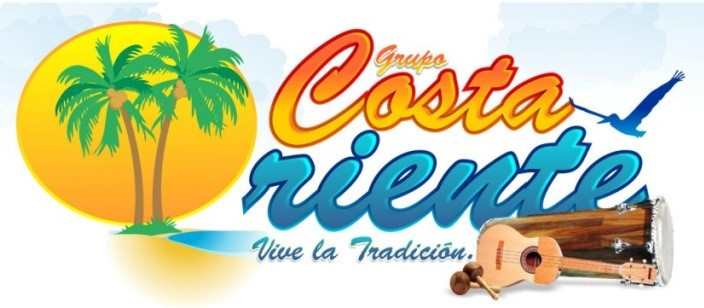
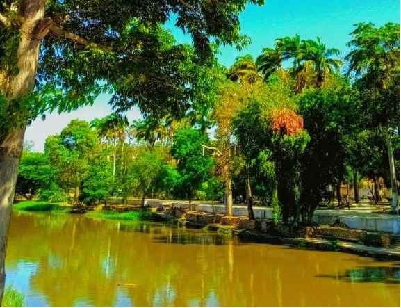
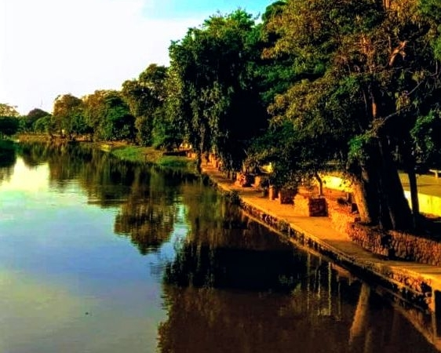

Los Dientes del Diablo (Nivel Avanzado)
Duración: 4 horas
Dificultad: Alta
Recorrido intenso por los rápidos más desafiantes del Manzanares, guiado por expertos locales con paradas musicales en la ribera.
Reservar Aventura
Disfruta de una experiencia única que combina la adrenalina del ecoturismo fluvial con la magia de nuestra tradición musical y cultural en Cumaná.
Duración: 4 horas
Dificultad: Alta
Recorrido intenso por los rápidos más desafiantes del Manzanares, guiado por expertos locales con paradas musicales en la ribera.
Reservar Aventura
Duración: Medio día
Dificultad: Moderada
Ideal para familias y visitantes que buscan una navegación ecoturística suave combinada con historias y cantos tradicionales del oriente.
Reservar Aventura
Duración: Día completo
Dificultad: Moderada a Alta
Una travesía extendida por el caudal histórico, integrando degustación gastronómica local y presentaciones en vivo de la Agrupación Costa Oriente.
Reservar Aventura| Nombre del Viaje | Duración | Nivel | Incluye |
|---|---|---|---|
| Los Dientes del Diablo | 4 Horas | Avanzado | Equipos de seguridad, guía musical, refrigerio local |
| Half Day Adventure | 3 Horas | Familiar | Chalecos, botes, guía de interpretación ambiental |
| Expedición Cultural | 6 Horas | Intermedio | Almuerzo típico, concierto en vivo, equipo completo |